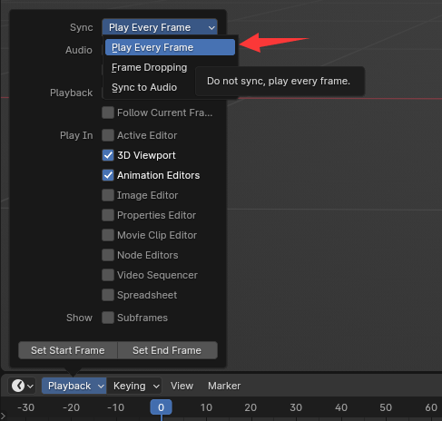

常见问题
为什么关节距离设置为0，仿真后仍然出现相对位移？
physx等仿真引擎的约束并不是绝对的约束。 太大的力（例如kinematic刚体的力）或太小的位置求解器迭代都会导致其脱离约束。
① 增加位置迭代器的步数，提高计算精度
② 设置骨骼属性为connected，使骨骼硬约束在parent的尾部，并且只应用physx的旋转结果。

为什么会出现抖动？
当刚体脱离硬约束时，它会尝试返回到约束应在的位置，并会产生很大的恢复力。 此时，如果存在kinematic刚体阻止其返回到应有的位置或旋转，则仿真结果就会出现抖动。
① 调整kinematic刚体的位置，使其不与硬约束冲突
② 单独取出抖动部分，禁用冲突的运动刚体，单独重新计算
③调整参数。 有时候，即使你放松了约束，但当你的大腿抬起并与裙子碰撞时，你仍然可能会发现有些抖动。 这可能是因为刚体由于摩擦而脱离了硬约束。 您可以尝试降低摩擦系数。
为什么回放时模拟提前停止？
应该是帧步不连续。 该插件需要模拟每个连续帧。
① 你可能是在播放过程中尝试跳过关键帧。
② 检查是否选择“播放每一帧”播放模式（在时间轴视口->播放->同步）
为什么尽管设置了位移上限和下限，模拟仍无法移动？
① 检查骨骼属性中是否勾选connected。 Connected 是 Blender 锁定骨骼位移的选项。 选中此选项的骨骼无法在姿势模式下移动。
②关节刚度与刚体质量是否匹配。 如果弹簧刚度太大或刚体质量太小，则力不足以移动刚体，因此它无法移动。
播放时FPS太低怎么办？
① 尝试隐藏您的网格。 您可以将网格移动到集合中以隐藏它们，并仅使用骨架进行播放。
② 尽量只保留骨架修改器。 有些修改器会消耗大量性能，例如几何节点，您可以尝试应用或禁用它们。
③ 不要在刚体修改模式下播放，在刚体修改模式下可以查看刚体形状，但是预览的绘图api效率不高，而且有些数据需要实时计算，所以有很多刚体的时候播放速度会变慢 。
③ 减少迭代步数。 合理的迭代步数可以提高计算速度。可以尝试在播放中使用1迭代步数，在最后烘焙时使用更高的迭代步数。
④ 尝试将动画烘焙到关键帧中然后播放。
⑤ 尽量将模拟分成单独的部分，分别进行模拟。
刚体编辑模式下卡顿怎么办？
① 增加刚体形状刷新间隔。
② 选择“仅选定的骨骼”仅预览选定的刚体骨骼。
为什么无法手动移动刚体骨骼？
① 由于该插件通过驱动物体驱动骨骼，因此可以通过移动驱动物体来移动骨骼。
② 如果想临时手动移动骨骼，工具栏有禁用驱动器约束。 与关键帧选项结合使用，您可以暂时获得对骨骼的控制。
③ 如果要完全删除驱动对象，请在刚体修改模式下选择骨骼，然后按Ctrl+Alt+Shift+C。 这将删除骨骼约束并删除驱动程序对象。 请注意，动画关键帧是在驱动器上设置的，因此此操作也将删除动画。
高速运动穿透刚体问题
当刚体以很高的速度运动时，刚体会穿透，不会发生碰撞。 为了避免这种情况，physx 有一个称为 ccd 的功能。 但在我的实践中，我没有见过这样的情况，而且ccd需要额外的计算，所以我没有在bonx中添加。 但如果你有一个高速刚体场景并发生渗透，你可以将搅拌器项目发送给我，让我考虑这个功能。
为什么这个插件使用空 obj 来驱动骨骼？
对于那些想要这样做的开发人员。 如果要为具有父对象的 obj 设置变换，则必须调用 update() 以确保父矩阵是最新的。 但是 update() 函数将从整个场景更新，如果你的场景很大，这个过程会非常慢。
bpy.context.view_layer.update()